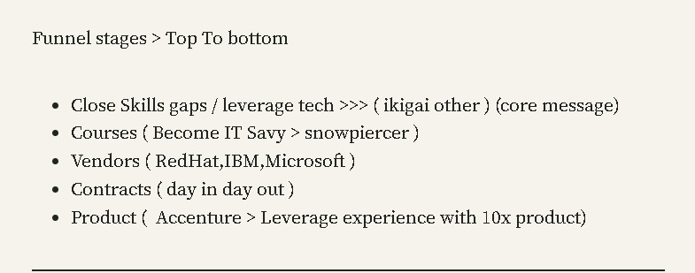

Understanding the Sales Funnel: How Lead Magnets Drive Progress Through Each Stage

In the world of digital marketing, lead magnets and sales funnels go hand in hand. A lead magnet is a crucial tool used to attract potential customers by offering valuable content or services in exchange for their contact details. This process is just the beginning of the journey known as the sales funnel, which guides prospects from their initial interaction with a brand to becoming loyal customers.
What is a Lead Magnet?
A lead magnet is essentially a free offering—a piece of content, a discount, a trial—that serves to entice a potential customer to provide their contact information, usually an email address. The goal is to convert a visitor into a lead, allowing for ongoing communication and the chance to nurture them through the sales funnel.
Lead magnets come in many forms, including:
-
Ebooks or Whitepapers: In-depth guides or research papers that provide valuable insights.
-
Checklists or Templates: Practical tools that users can apply immediately.
-
Webinars or Free Training Sessions: Educational content that offers a glimpse into a brand's expertise.
-
Discounts or Coupons: Immediate financial incentives.
-
Free Trials or Samples: Risk-free opportunities to try a product or service.
How Lead Magnets Relate to the Sales Funnel
A sales funnel is a framework that maps out the journey of a customer from the moment they become aware of a brand to when they make a purchase—and even beyond, into retention and loyalty. Let’s break down the stages of the sales funnel and see how lead magnets can be strategically applied to each.
-
Awareness: At the top of the funnel, the primary goal is to create awareness about a product or service. This is where lead magnets are most powerful. By offering valuable content, like a free ebook on "Closing Skill Gaps and Leveraging Technology," a business can attract a wide audience who is interested in enhancing their skills or learning about new tech. This aligns perfectly with the core message of guiding individuals towards leveraging technology in their careers.
-
Interest: Once you have their attention, the next step is to build interest. Here, you might offer specialized courses or more detailed guides that show prospects how to become "IT Savvy" or navigate industry challenges ("Snowpiercer" metaphor). These resources serve to deepen the relationship by providing more specific value and proving the business’s expertise.
-
Consideration: At this stage, the prospect is evaluating different solutions, including competitors. To keep them engaged, offering information about reputable vendors (such as RedHat, IBM, Microsoft) with whom you have partnerships or endorsements can help build credibility and trust. Lead magnets like comparison charts, vendor whitepapers, or expert reviews can help move the lead closer to making a decision.
-
Conversion: Now, the goal is to convert leads into customers. This might involve presenting contracts and clear proposals outlining how your solutions (be it services from Accenture or other experience-leveraging products) can solve the customer’s pain points. At this stage, offering a free consultation or a demo can serve as a powerful lead magnet, helping to seal the deal.
-
Retention: Even after conversion, the sales funnel continues. Retention involves keeping the customer engaged and satisfied with the product. Lead magnets for this stage might include exclusive access to new features, special discounts on renewals, or personalized training sessions ("day in, day out" commitment). By continually adding value, businesses can enhance customer loyalty and encourage repeat business.
The Role of Lead Magnets in Funnel Optimization
Lead magnets do more than just fill the top of the funnel with leads; they help guide potential customers through every stage of their journey. By aligning the type of lead magnet with the specific needs of the prospect at each funnel stage, businesses can improve their conversion rates and build stronger relationships with their customers.
-
Segmentation: Different lead magnets can help segment your audience based on their needs and interests, allowing for more personalized marketing.
-
Nurturing: Lead magnets at various stages help nurture leads, moving them down the funnel through consistent, targeted engagement.
-
Conversion Optimization: Tailored lead magnets increase the likelihood of conversion by addressing specific pain points or needs at the right time.
In conclusion, understanding how to use lead magnets effectively within each stage of the sales funnel is crucial for any marketing strategy. By aligning your lead magnets with the journey of your customer, from awareness to retention, you can maximize their effectiveness and drive better business outcomes.
By mapping out your sales funnel and strategically placing lead magnets at each stage, you can create a seamless and effective customer journey that not only attracts leads but also nurtures them towards long-term loyalty.
Imported from rifaterdemsahin.com · 2024